今回は入場料が半額になる午後５時からの入場で、人数が多い事から車で行きました。
駐車料金の３千円を自動券売機に入れると『コイン』が一つ出てきて、これがシャトルバスの乗車券代わりとなり、駐車場から出る時に返却します。
その日の状況にもよると思いますが、目の前でバスが出てしまって「これはしばらく待たなければならないかも…」と覚悟を決めたところ、すぐに次のバスがやって来て２０分くらいで西ゲートに到着。
５時までには１時間ほど間があったので、入場券を購入してすでにできている列の後ろに並び、全期間入場券を持っているスイカさんとナスさんも私たちに付き合って列に加わります。
女が三人寄ると姦しいと言われますが、七人寄るとどうなるかと言いますと。。。
出てきます。
ドーナツ、冷たいジュース、お菓子…
そんなものがあってペチャクチャやっていますと、時間なんてすぐに過ぎてしまうというもので、トイレに行くと数人が列から抜けたとたんにゲート前へ移動となり、ちょっと焦りました。
続々と帰っていく人波を見送りながら私たちは会場内へ入って行きます。
エスカレーターでグローバル・ループへ上がると、二ヶ月前にはなかったミストが日除けのテントからもうもうと吹き出しており、これによってあたりの気温が２℃下がるのだそうで、細かいミストは地上に落ちる前に蒸発してしまうのだそうです。
そんなミストの降りかかる下を歩いて先ずは『遊びと参加ゾーン』へ…
グローバル・ループから枝分かれした木製の橋を進んで行くと、そこはもうちびっ子たちの天国です。
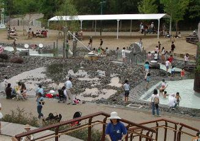
トマトさんが登りたがった登り降りのできるネットを張った山があったり、私が滑りたかったふたつのトンネルの滑り台があったり（どちらも大人はダメ）、ご覧のように絶えず水が流れている浅い水場が設けてあって、子供たちが夢中で遊んでいます。
もしお子様連れでここを訪れるならば、着替えとタオルの準備をお勧めします。
そして、最初にここに足を踏み入れてしまった場合は、ご両親はいくつかのパビリオン巡りを諦めることになるものとご覚悟下さい。（＾ｗ＾；
子供たちの遊ぶ姿を眺めながら色とりどりの花の植えられた坂道を登って行くと、グローイング・ヴィレッジと名付けられた自然村に入り、ここからは夕方６時以降は入れなくなります。
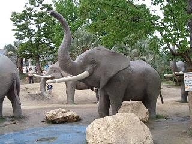
まるで動物園のように象やキリンなどが置かれている広場があり、大きな木に沢山の綱をぶら下げた木登りコーナーもありました。
【地球市民村】には『出会いのゾーン』と『体験と交流のゾーン』に分かれており、屋内の出会いゾーンにはアートドリーミングシアターがあります。
ここはちょっと変わった椅子になっていて、座るというよりは寝て天井のスクリーンを見るようになっているのです。
出入り口付近には『ナチュラルフード・カフェ』という無農薬・低農薬の素材を使った自然食のカフェがあり、スイカさんお勧めの店のひとつだそうです。
『オーガニック・ガーデン』と名付けられた、堆肥や雨水を利用し永続的な農業を目指す庭の、日照り続きでちょっと元気がなさそうな花や野菜を眺めながら体験と交流ゾーンに入ります。
バンブー楽器やアジアおはなしの家があったり、木切れに好きな絵を描くコーナーがあったりしてトマトさんとレタスさんが早速参加していましたが、これは大人も子供も楽しめそうです。
ちょっと面白いと感じたのはひとつひとつのコーナーが別個の建物になっており、すべての建物が竹で編んだ大きなカマクラのようなもので覆われていたことで、これだけでもずいぶん暑さしのぎになっているのでしょう。
まあるく作ってある市民村の外れにはお茶畑があり、『アジアン茶道』では世界のお茶が飲めるのだそうですが、残念ながらこの日はもう終わってしまったようでした。
感心したのはミニトマトをきれいに選定して建物の周りに並べていたところがあり、食べごろのものからまだ青い物などが順番に実っていて、花には負けないきれいさを誇っていました。
そして近くには『食べないで下さい』と書いてありました。。。（笑
時間の都合上そこそこで引き返し、次に訪れたのはグローバル・コモン６で、ここで
「ちょっと行きたいところがある」
とトマトさんがしばらく抜けることになり、心配したスイカさんが付き添いとして一緒に行くことになりました。
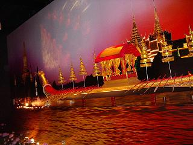
待つこともなくスンナリ入れた【タイ館】は、万博開幕当時は今とはまったく違う内容だったそうですが、タイの特色を出すために大々的な模様替えが行われて今のパビリオンとなったそうです。
タイ王室の船である『スパンナホン』の大きな模型が立派です。
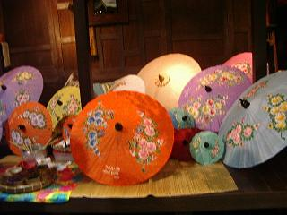
民芸品として展示されていた中には、日本のお土産やさんでも見かけそうなこんなカラフルな紙の傘があり、この写真ではちょっとわかりにくいかもしれませんが、仕切りになっている板張りの感じもなんとなく日本の古家のような懐かしさがありました。
はっと気がついたときには周りには知っている顔が一人も見当たらず、慌てて外へ飛び出してキョロキョロ見回しますが人は沢山いるものの知らない人ばかり。
早くも迷子になったか。。。
と、ウロウロしているとラディッシュさんに名前を呼ばれ、危うくひとりぽっちになる難をまぬがれました。（＾ｖ＾；
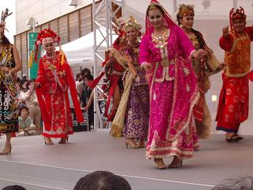
で、みんなどこにいたのかといいますと、コモン６のほぼ中央にあるステージで行われている民族舞踊を見ており、迷子になりかけたことなんぞ忘れて早速前の方に割り込みます。
東南アジア系の民族舞踊といえば鬼のようなお面を被った魔王（？）が印象的なのですが、男性も女性も楽しそうに踊っているところを見ると、なにかお祝い事の踊りなのかもしれません。
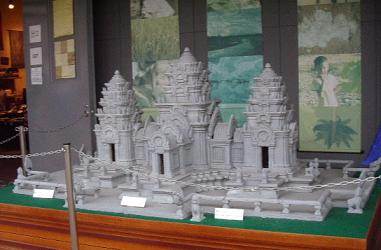
さてお次は、タイ館の隣にあった【カンボジア館】です。
カンボジアといえば世界遺産の『アンコールワット』。
縮小レプリカや彫刻などが展示され、石像彫刻を彫っている男性もいました。
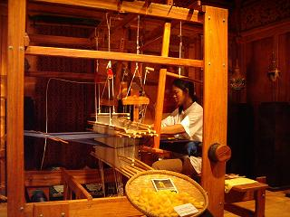
特産シルクの手織り実演もあり、その隣では『くくり』という仕事をする女性もいました。
私はこのくくりというものを始めて知ったのですが、５センチほどの幅に糸を一本ずつ隙間なく並べて、模様の形に染めたくない部分だけ糸で縛るという、織り糸を染色する前作業のようです。
これは大変根気のいる手作業で、染めた後は（恐らく織っていく段階で）縛った糸を切り離していくのでしょうが、これもまた染めた糸を切ってしまったら大変。
カンボジア館から外に出て、別行動を取った二人の姿を５人の目で探しますが見あたらず、池の中にできている休憩所の中を通って向こう側に渡り、入り口が近かったことから何気なく入ったのがブルネイ・ダルサラーム館だと思うのですが、これがまったく記憶にございません。（_w_；
入り口に入ったとたんに目に飛び込んできた、地雷と一緒に並べられた様々な義足。
ブリキのような素材を太ももの太さから足首の太さに丸めただけのただの筒っぽの様な物から、少しずつ改良されたいくつかのものを挟んで、一番奥には最新型の膝や足首も曲げられそうな一本の足の形になったものが展示されていました。
私の記憶では、この義足を見ただけでこのパビリオンを出たような気がするのですが、ブルネイ・ダルサラームというよりは【ベトナム館】にあったという方がぴったりくるんです。
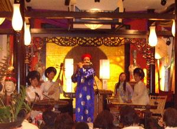
が、兼ねてから一度は行ってみたいと思っていたベトナムは、伝統楽器の優しい音色で奏でられる日本の曲をしばし聞いて、竹細工の可愛い小物が展示されていたのも覚えているんです。不思議ですねぇ…
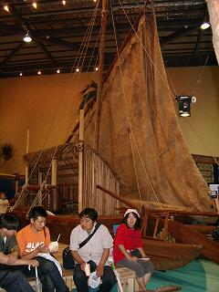
次に入ったのは【南太平洋共同館】で、キリバス共和国・サモア独立国・ソロモン諸島・ツバル・トンガ王国・バヌアツ共和国・パプアニューギニア独立国・パラオ諸島・フィジー諸島共和国・マーシャル諸島共和国・ミクロネシア連邦の太平洋に点在する１１カ国が共同参加するパビリオンです。
ツアー旅行では行けそうになさそうな国が半分以上ありそうな…というより、ツバルってどこ？なんてことを思っていたら、１１の国が太平洋のどこにあるのか地図を拡大してわかりやすく指し示してあり、ツバルは日付変更線の手前の赤道よりちょっと下のあたりにありました。
写真の「カリア」はトンガ王国から運ばれた大型外洋カヌーだそうで、パビリオンの真ん中に置かれており、近くに置かれた椅子で歩き疲れた人々が休んでいました。
また、このパビリオンの出口で椰子の実ジュースが売られており、気になって気になって仕方がないラディッシュさんですが、私を含め三人はどこかで飲んだことがあり、誰も買おうとは言いません。
「悔いが残って夜寝れんといかんで買ってりゃあ！」
と私、名古屋弁丸出しでひと言のたまい、ラディッシュさんの背中を押します。
なんでもものは試しです。
こんな機会でもなければ試せないのですから、７００円で話のタネを買ってみてください。（＾ε＾
「マズイ」とは言いませんが、ラディッシュさん非常に良い答えを出してくれました。
「ビミョー。。。」
普通のジュースと比べてしまえば甘みがありませんのでちょっとびっくりするかもしれませんが、冷たく冷やしてあると美味しいという人もいます。
ここでは緑色の外皮を剥いて栗の渋皮のような繊維質にくるまれた実になっていますが、お荷物にならなければ持ち帰って割りますと、内側に白い層がありますので、これをスプーンなどで細かくそぎ落とし、砂糖と混ぜてレンジで暖めたお餅などにつけて食べますと、ココナッツミルク味のかわりお餅が楽しめます。
バリに行ったときに、現地添乗員さんが買ってくれたものは、おはぎのようにご飯をハンゴロシ（半分潰した感じ）にしたようなものに、ガシ！ガシ！ガシ！と削って砂糖を加えてまぶしていましたが、不思議な美味しさがありました。
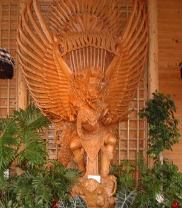
椰子の実ジュースで思わぬ長話になってしまいましたが、やいのやいのと騒ぎながらもなかなか帰ってこない二人が心配になり、こんなこともあろうかと前もってメモリーしておいた携帯ナンバーにコールをかけますが、何の反応もなく、
「なんだ、携帯なんてなんも役に立たんじゃん！」
「もう一丁いきますか…」
と、国鳥であり守護神とされている半人半鳥の『ガルーダ』が入り口を守る【インドネシア館】に入館しました。
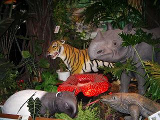
熱帯植物を配置してジャングルを表現していたのはインドネシア館の他にもありましたが、ここでは目で見て耳で聴いて…といった感じで、鳥のさえずりが流れていたり、池か沼を模した水辺の石の上に、大きなイモリの一種らしきものや亀などの模造品がリアル感たっぷりな様相で配置されており、トドメはご覧のような虎やサイ、直径１ｍ近くあるといわれる食虫植物のラフレシアのレプリカで前半を締めくくっておりました。
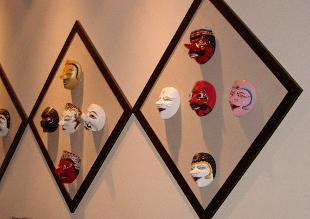
後半は…と言いますと、ビデオが流されているコーナーがあり、興味津々で観賞していた人や疲れ果ててどこでもいいから休みたかった人々などが座っている何列かの席の後ろに、こんなユニークなお面が飾ってありました。
コモン６は駆け足で半分しか入館できませんでしたが、熱帯の珍しい魚を集めたミニ・水族館コーナーがあったり、大きな木の根っこがあったり、髪飾りなどのお手軽土産もあったりして、南国なれどなんだかちょっと懐かしいような雰囲気も味わえました。
とりあえず半分見たから…と、帰ってこない二人を『待っている』よりは『迎えに行こう』とグローバル・ループへの橋に向かって歩き始めた頃にやっと帰ってきた二人に巡り会え、無事に再開できたことを（オーバーな…）喜び合って、
「何度も電話鳴らしたんだけど気がつかなかった？」
「電話なんて鳴った？（＾ｍ＾；」
だめだ こりゃ…
次に向かうべき方向は日本ゾーンと決まり、『長久手日本館』を見るべきか『大地の塔』を見るべきか迷った末、待ち時間の短かった大地の塔（40分）の列に並ぶことになり、足の痛みもあって私はパスすることにしました。
トマトさんも歩きつかれたのか「一度見てるから」と待ち組みに加わり、座っていたいところなれど喉も渇いていたので、一人で自販機のあるところまで歩いて行くと、
「10分待ちでぇーす！」
と、どこからか声が聞こえてきて、辺りを見回すとまだ行っていない【長久手愛知県館】で、とりあえずお茶を買ってぐびぐびと喉の渇きを癒し、トマトさんのところに帰ると、
「スイカさんが、先にアルゼンチン館のほうに行っていたら？と言っていた」
と聞いて、
「10分待ちだったけど行ってみる？」
てなことで、足の痛みも忘れてそちらへ向かいました。
長久手愛知県館は、三つに分かれており、大きな山車がふたつパビリオン内の正面に据えられた『愛知おまつり広場』では、愛知県内の市町村のお祭りや伝統芸能などが日替わりで披露されているそうで、私たちが入ったのは『地球たいへん大講演会』という奥のほうにあるパビリオンです。
ここでは博士が名古屋弁で地球温暖化などの環境問題を、映像とパフォーマンスを駆使してわかりやすく説明しています。
一休みしたかった私には都合よく長い椅子に腰掛けての観覧だったので、楽しみながら休息にもなり一石二鳥でした。（＾ｖ＾；
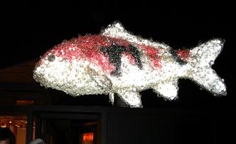
明るい間は気がつかなかったのですが、コモン２の入り口にこんな物がありました。
遠くから見ると支えているポールが見えないので、夜空に泳いでいるように見えたのですが、その隣にはなぜか虎も泳いで（？）いました。
この鯉一体何でできていると思います？
側によって見て始めてわかったのですが、透明のスーパーボールのような物が集まってできているんです。
ひとつひとつの大きさがまちまちなので、まるで泡でできているように見えました。
真ん中につつじ池という大きな池があるので、キューバ館と国連館の間を進んで行くと、メキシコ館の向こうは暗くて何もないような…
かえるの鳴き声が聞こえる池と真っ暗な森に挟まれた道をしばし行くと、ドミニカ館の横に出てぱあっと視界が広がりました。
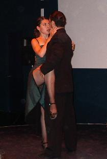
【アルゼンチン館】は真ん中に何列かに椅子を並べた広場の奥からふたつ目にあり、その奥のアンデス共同館の前は、まるで温泉地の湯煙のように景気よくミストを吹き出して、白く煙ったその奥からなにかが出てきそうな。。。
そんなミステリアスなところに、ちんまりとありました。
入り口を入ると正面奥にスクリーンがあり、その下には床が少し高くなったスイカさんお勧めのアルゼンチン・タンゴの舞台があります。
展示品は地味でした。
ショーが行われるパビリオンはどこでも時間が決まっており、この日私たちが予定していたのは20：00から始まるものだったと思いますが、５分前になっても大地の塔に残してきた５人がやって来ておらず、外の広場で座って待っていたのですが、どうにもお腹が空いて仕方がありません。
いただいた時にはお腹が空いていなくてカバンにしまっておいたカレードーナツのことを思い出して、ひとりでパクパクやっていますと、アルゼンチン館のドアが女性スタッフによって閉められようとしており、残りを無理矢理口の中に押し込んでダッシュ！
滑り込みセーフというやつです。
が、５人がまだ来ていません。
ドアは閉められましたが、まだやって来る人があってもう一度ドアが開き、待っていた５人がなんとか間に合いました。
面倒見がよく機転の利くスイカさんは、大地の塔からアルゼンチン館への移動途中時間に余裕があるのを計算してマンモスラボにも案内してきたようで、はあぁ…お疲れ様でございました。
私はダンスはできませんが踊っているのを見るのは好きで、一組の男女がステージに現れ、音楽が流れ始めました。
「ぷっ！なんかルパン3世みたい…」
小柄な男性を見るなり失礼にもアニメのルパン三世を思い出してしまいましたが、恋の駆け引きを物語化したような内容で、コミカルなやり取りを取り入れながらもセクシーで力強く、時には穏やかに観客の気持ちをぐいぐい引き込んでいきます。
２曲目の終わり近くになって、
「あっ！」
声にこそ出しませんでしたが、アクシデントが起きました。
女性ダンサーはグリーン系のミディー丈のスカートで、後ろに大きく割れたスリット部分にネット状のギャザーが仕込まれていたのですが、そのスカートがヒールに引っかかってしまったのです。
彼女は何食わぬ顔で踊り続けますが、あれでは足も思うように伸ばせないでしょう…
今にもネットの部分がぞろりと外れそうでハラハラしたのですが、何事もなく最後まで踊り通しました。
曲が終わってにっこりと微笑みながら、ヒールからさり気なくスカートを外し、ダラリと下がったそのスカート部分もなんのその、誇らしげに写真撮影のためのポーズをとりました。
さて、その次に訪れたのはコモン２の一番奥にあって、
「最終回でーす！」
と呼びかけるお兄さんがいる【アメリカ館】です。
パビリオン内に入ると、壁のあちこちに雷の赤ちゃんのような赤や紫色のビリビリした物がうごめいており、
「はて、あれはなんじゃ？」
と近づいてそこに書いてある説明を読むと、そこに手を触れることで電気の流れが変わるそうで、
びりびり！と来るのはイヤだけど、興味は津々で恐る恐る手を伸ばし赤い雷の赤ちゃんに触れてみると、
何の抵抗もなく赤い稲妻（？）が広がります。
「おおー！ これは面白い！」
子供たちに混じって、あっちへペタリ！ こっちへペタリ！と手の平を移動させて、ついつい熱中してしまったかぼちゃです。（＾ｖ＾；
それだけで終わりではないようで、次のドアに進むために整列を促され、赤ちゃん稲妻をカメラに収めようとしたのですが、壁際の子供たちが遊びまくっているわ、人波の頭で撮れないわ…で、諦めて開かれたドアに向かいました。
マルチメデア・シアターでは生誕３００年目の前夜に今現在の世界にベンジャミン・フランクリンさんがやって来て、雷を捕まえて見せてくれます。（≧ｖ≦
この日でパビリオンの内容が変わってしまうそうなので、ちょっと内容をお話しますと、フランクリンさんが雷の電気を捕らえて、シアター内に流してしまうのです。
観客である私たちはビリ！ビリ！ビリ！
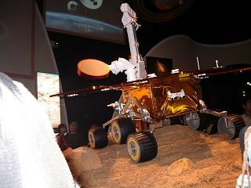
シアターから出ると、高さ約1.5m、ソーラーパネル全体の幅が約2.3mの火星探査車の実物大複製車が展示されており、このロボット車両の打ち上げや着陸、探索活動のビデオ・シュミレーションを見たり、写真を写したりする人でいっぱいでした。
何か食べようということになり、店を覗いて歩いて行きますと
「半額でーす！」
という呼び込みが聞こえ、これに誘われるように中南米料理の『ビクトリア バーベキューガーデン』の店先へ…
「いつも半額セールやってるの？」
と万博博士のスイカさんに聞いてみると
「こんなことはじめて！」
これはもう決まりです。
張り出してあるメニューを見て、鶏肉を春巻きの皮で挟んだものと説明のある『パステル』と『ミニパステル』というものが同じ料金(半額前料金600円）であったので、ミニのほうが食べやすいかな？などと迷いながらも、普通のパステルを注文したところそれが最後のひとつであったらしく、同じものを注文しようとしていた他の人はミニになってしまいました。
春巻きを二枚重ねた中に具を入れて揚げたようなものを紙の袋に入れて渡され、それを席まで持っていって食べ始めるのですが、皮ばかりで一向に具が口に入ってきません。
油で揚げてあるので具の入っているところが膨れ、それを袋に入れて立てて持ってきたので具が片寄ってしまったようですが、ミニパステルを食べている人を見ると、中身が違っていたらしくぷっくりと膨れた中には（チーズかクリームが溶けて皮に滲みこんででもいたのか）何にも入っておらず、ブーイングが飛び交っておりました。（＾～＾；
やっと具にたどり着いた頃には、アルゼンチン館に入る前に食べたカレードーナツが祟ってお腹が膨れてしまい、残りはテイクアウトとばかりに袋にしまいこんでいると、
「これ美味しいよ」
とハンバーガーのように丸いパンのサンドイッチを1/3ほどいただき、『味の違う物は入る』とばかりにパクパク食べてしまいましたが、油物で味覚が麻痺していたのか正直なところ味はわかりませんでした。（＾へ＾；
駐車場へ向かうバスの最終は21：30なので、そろそろバス乗り場に向かわなくてはなりません。
時計回りと反対方向にループを歩き、途中「ひょっとしたらＪＲ東海超電動リニア館でリニア車両内を通り抜けできるかも…」と期待したのですが、残念ながら入り口にチェーンが掛かっており素通り。
素通りして間もなく、右手にどこかの牧場のアイスクリーム屋さんだったと思いますが、スイカさんお勧めのソフトクリームがあるということで、牛乳ソフトを買いました。
濃厚な牛乳の味が、まろやかに口の中に広がってとっても美味しいソフトを舐めながら西ゲートへ向かい、慌てることなくシャトルバスに乗り、無事帰ってまいりました。
スイカさん案内役お疲れ様でした。m( _w_ )m
テイクアウトして家に持ち帰ったパステルの残りは、娘が美味しい美味しいと食べてました。（＾ｖ＾